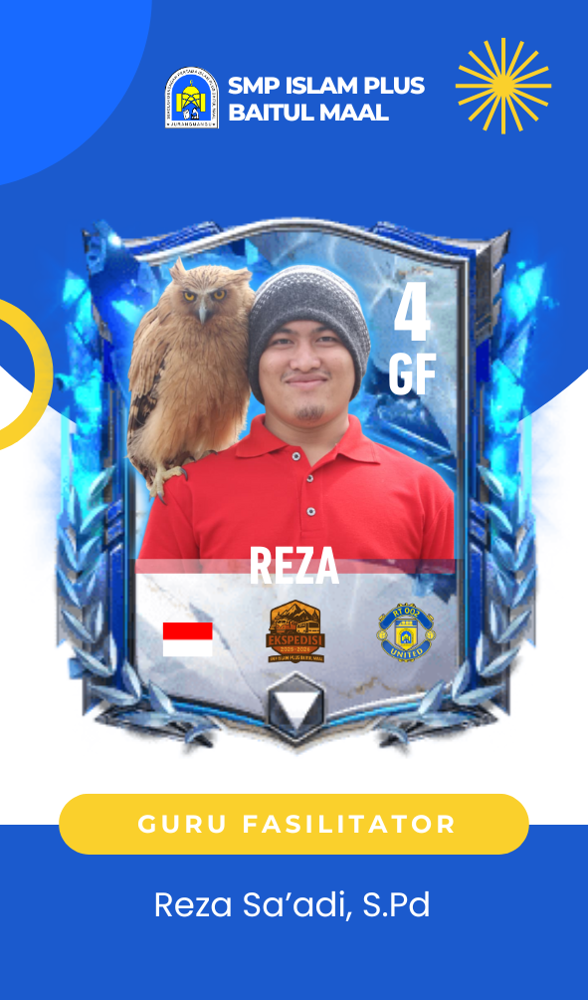
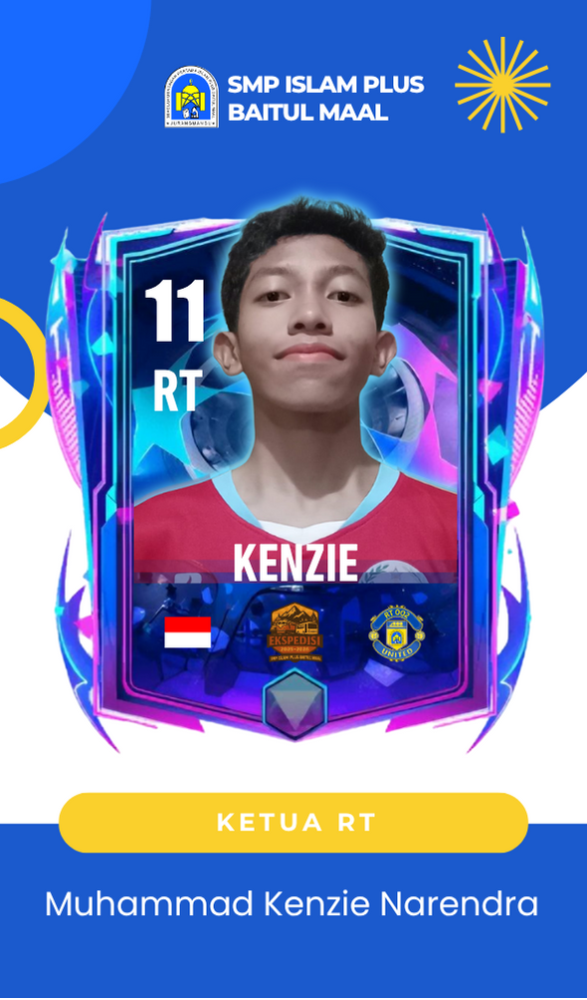
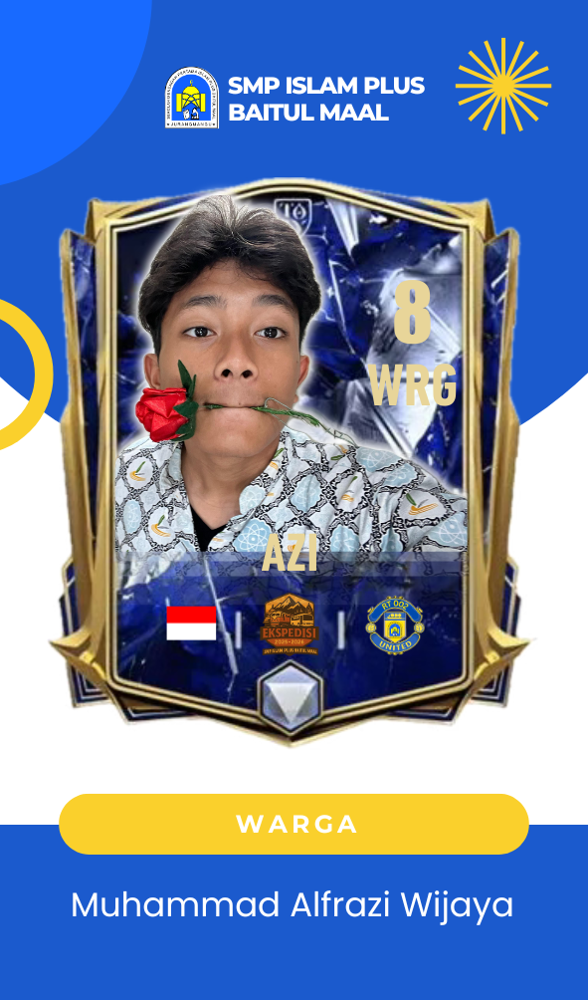
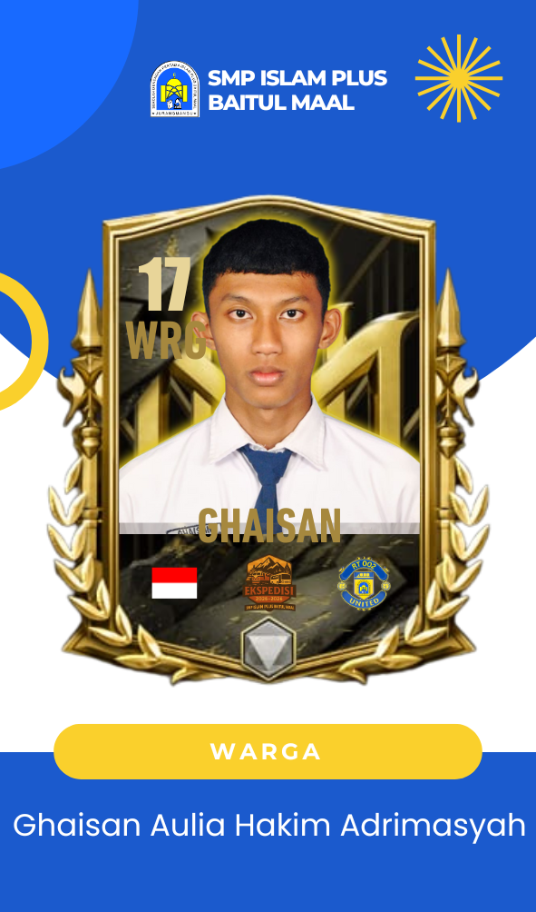
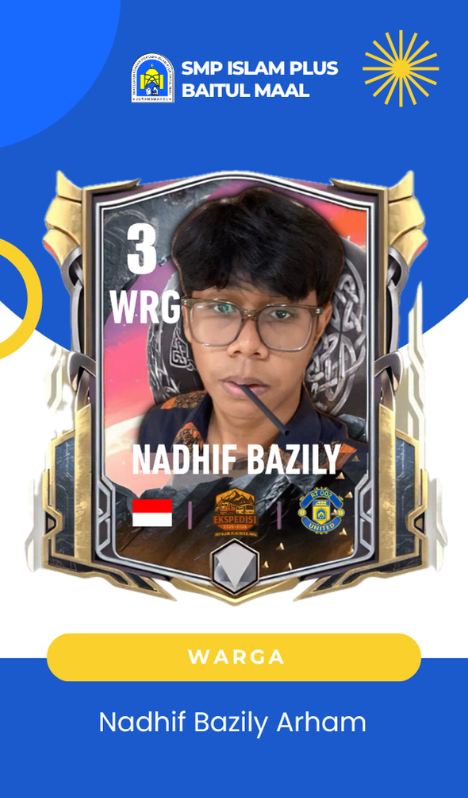
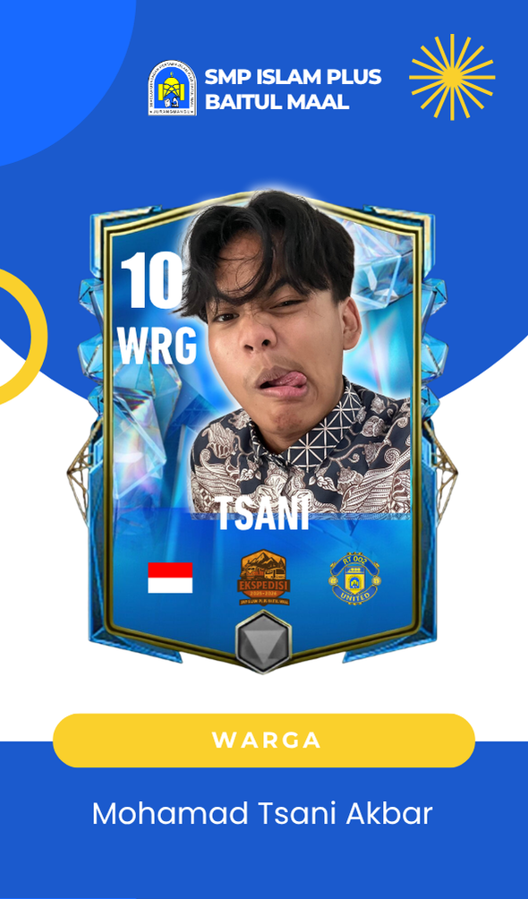
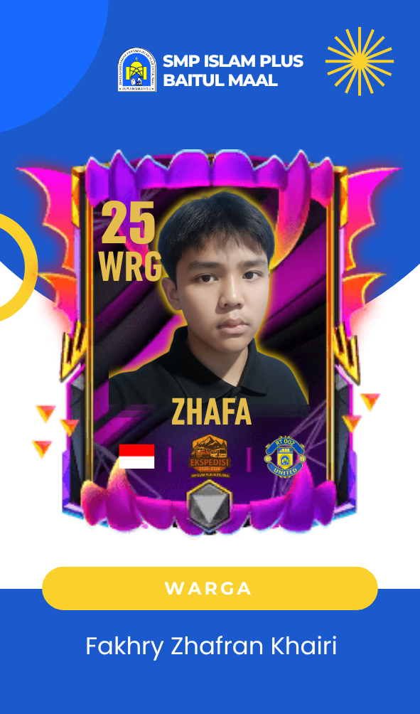
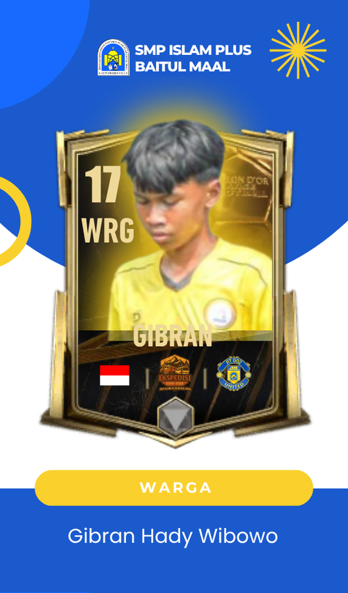
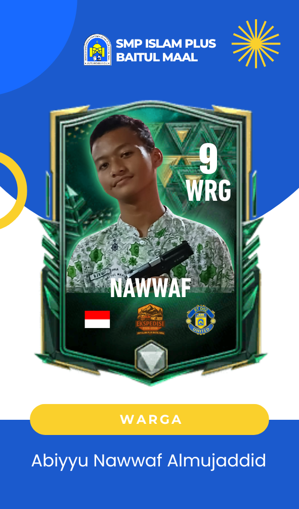
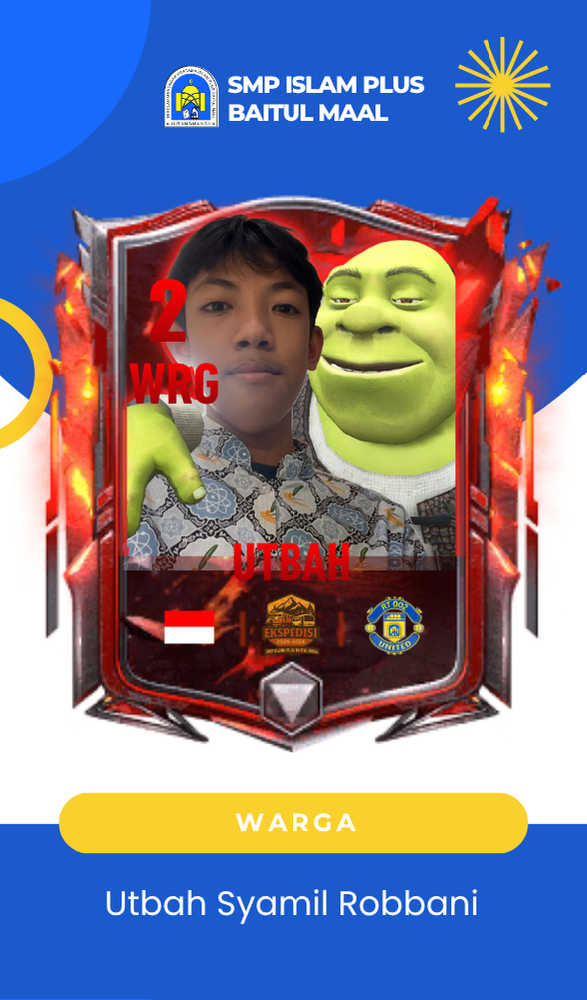

Durasi Ekspedisi
Guru Fasilitator & Siswa RT 002
Edukasi, Budaya, & Pengabdian
Titik kumpul awal. Mengajarkan Disiplin dan Kebersamaan tim.
Titik Keberangkatan. Melatih Tanggung Jawab dan Kesabaran dalam mobilitas.
Simbol perubahan sosial melalui seni. Nilai: Kreativitas dan Kolaborasi.

Mengabadikan perjuangan TNI. Nilai: Patriotisme, Perjuangan.
Perkembangan alat transportasi. Nilai: Perkembangan Teknologi.
Wisata agro. Nilai: Pertanian Berkelanjutan.
Pusat kegiatan Pengabdian Masyarakat. Nilai: Empati & Gotong Royong.

Pembimbing & Koordinator Umum

MC (Master of Ceremony) & Juru Bicara

MC (Master of Ceremony)

Koordinator Perlengkapan

Koordinator Perlengkapan

Koordinator Ice Breaking & Konsumsi

Koordinator Games & Keamanan

Koordinator Games & Acara

Koordinator Dokumentasi & Fotografi

Koordinator Ice Breaking
Dokumentasi lengkap perjalanan kelompok RT 02 United.
Tonton di YouTube

Ekspedisi ini mengusung tema **"Interaksi"** dan subtema **"Kreasi"**, dengan fokus pada topik **"Olahraga"**. Tujuannya adalah menumbuhkan kemampuan berinteraksi dan kreativitas melalui aktivitas fisik di lingkungan Desa Pujon Lor.